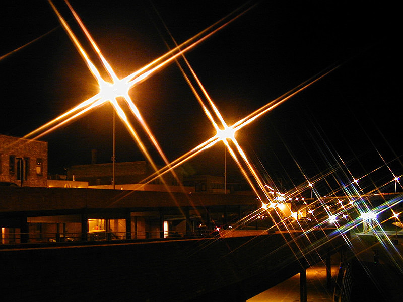

Overview
Lense types
UV/Skylight
Polarizing
Neutral-Density
Hard-edge/a>
Soft-edge
Reverse
Colour
Close up
Special-effects
Viewfinder

UV filter does not make much of a difference, but is commonly used to protect a lense
Polarizing filter enhaces the red pot for contrast
Neutral Density filter creates a cool motion blur effect on the water
Close-up filter allows images to have a closer focus and get better close up on the bee

Special effects filter creates a star light effect on the lamp posts
|
Overview
Filters are useful tools used by photographers to alter the appearance of an image, such as glare and reflections, enhance colours and reduce light coming into the lens. There are many types of lenses catered to specific purpose to deliver a specific effect that can help enhance the final look of an image. Filters are attached to the lense of the camera, and are able to protect your lense, eliminating the possibility of scratches, and cracks. Furthermore, Lenses are able to correct and enhance colours in an image and ensure accurate exposure, which enhance the colour temperature of a scene, or improve the contrast for a more vibrant image, by blocking some of the light that enters the lens, through different glass coatings.

Filters change the way images look
Here are different types of lenses and their features from adorama.com:
UV & Skylight Filter
Protects lens glass
Shields old photography film from UV rays
Used for all types of photography
Polarizing Filter
Reduces reflections and glare
Enhances colours and contrast
Used for all types of photography
Neutral Density Filter
Reduces the amount of light entering the lens
Allows the use of slower shutter speeds and wider apertures
Helps create motion blur
Used for landscape photography and Flash Photography
Hard-Edge Graduated ND Filter
Reduces the amount of light entering the lens through the top half of the filter
Provides a sharp transition between dark and clear for flat horizons
Balances exposure and high contrast between bright midday skies and dark foreground
Used for landscape Photography
Soft-Edge Graduated ND Filter
Reduces the amount of light entering the lens through the top half of the filter
Provides a smoother transition between dark and clear so use of filter is not evident
Balances exposure and high contrast between bright midday skies and dark foreground
Used for landscape Photography
Reverse Graduated ND Filter
Reduces the amount of light entering the lens around the upper midline
Provides a smooth transition from dark to less dark from the middle to the top edge
Properly exposes the sun for clearer sunsets and sunrises
Used for landscape Photography
coloured Filter
Corrects colours for accurate white balance
Enhances or blocks one type of colour
Used for all types of photography
Close-Up Filter
Allows closer focusing on subjects
Helps capture sharp close-ups
Used for macro Photography
Special Effects Filters
Produces multi-point star sparkles
Softens or diffuses edges for dream-like effect with sharp center
Creates multiple copies of a subject or scene
Blocks infrared light and passes visible light
Customizes the shape of bokeh lights
Used for all types of photography